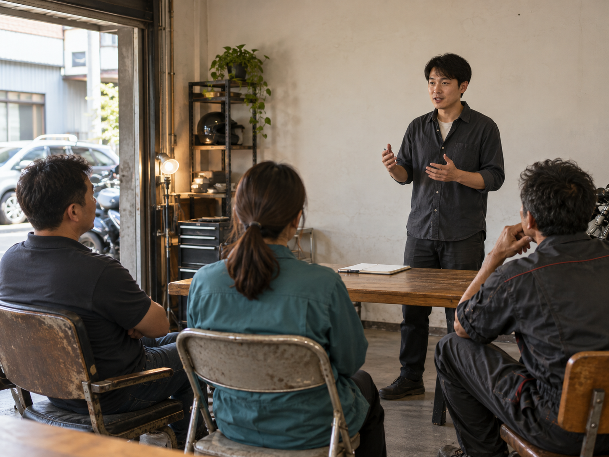

前三天講了心合、體合、人合。
今天是最後一個，世界合。
創業第一年EinFit，我們就拿了國家品牌玉山獎六大項，SNQ，100%無添加獎項。
我以為只要用最好的原料、最安全的製程、最多的獎項，營業額就會上去，員工就能照顧好。
事實並不是如此。
業績並沒有跟著我們的獎項等比增加，還要不斷處理各部門之間協調溝通的問題。
我在無數個夜晚懷疑自己，是不是做錯了什麼決定。
有一天我問夥伴，我們該怎麼辦。
她想了一整晚，說：去演講吧，讓更多人知道我們的故事。
其實我心底千百個不願意。上台講話一直是我最恐懼的事情之一。
於是就有了我的第一次演講。
台下只有三個人。一個中古車老闆，一個員工，還有一個是隔壁的重機店老闆。
我依然很用心地準備了七天七夜。
三年來數百次的練習，數百次的寫稿，數百次的準備教材。
去年終於站上了四百人的場。
為什麼換一個地方，通常沒有用
心理學上有個現象叫享樂適應。
不管是加薪、換工作、搬到新的城市，換了新的伴侶，那種變好的感覺都有保存期限。
過一段時間，我們的快樂會回到原本的水位。
所以我們才會一直在換。換工作，換城市，換伴侶，換一個新的開始。
換完之後有一陣子真的比較好，然後又慢慢回到原點。
我們總以為，去了哪裡才會平靜。換了工作才會快樂。遇到對的人，人生才會幸福。
等孩子大一點再說。等這個案子結束再說。等我存夠錢再說。
但當你還在跟自己對抗，換一個地方，也只是帶著原本的自己繼續流浪。

那一年我們公司卡住的時候，我其實很想怪別人。
怪消費者不懂什麼叫真正的健康，怪市場，怪時機。
後來我沒有換一個更好的市場，
我只是去講了一場只有三個人的演講。
王陽明說，大人者，以天地萬物為一體者也。
世界合，不是世界從此沒有問題。
而是你不再把自己放在世界的對立面。
你開始明白，風來的時候可以感受風，雨來的時候可以接受雨。
笑的時候輕鬆笑，哭的時候盡情哭
該撐傘就撐傘，該離開危險的地方就離開。
平靜不是什麼都不做。
平靜是你不再跟真實對抗。
當你跟世界合在一起，你未必每一刻都快樂，
但你不再需要逃到某個地方，才能做自己。
四天講完了。
心合，是知道的事跟做出來的事，變成同一件事。
體合，是想活久的你跟想舒服的你，站到同一邊。
人合，是你看懂他的不同，又沒有丟失自己。
世界合，是你不必再逃去哪裡，才能做自己。
人生最後，不是在追求更多。
而是在讓心、身、人與世界，慢慢回到同一個方向。
那三個人的場子，是我人生真正開始合起來的地方。
因為那一天我終於不再等世界變好，我只是把我能做的那件事，做到最好。
『從不會因為換個環境而更好，而是你做出了哪些新的行為。』
『合。』
你的業績卡住了嗎？
我也走過那段「心累」的路，所以我懂那種明明很努力，卻一直卡在同一關的感覺。
如果你想知道：
你的「業務原廠設定」，適合主動開發，還是穩定經營？
你真正卡住的地方，是「開發」、「開口」，還是「成交」？
企業團隊想提升成交力，可以怎麼設計內訓？
想學更多，或邀約企業內訓，歡迎從這裡認識我：
Instagram：eintaixin
個人官網